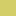
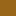

<!doctype html>
<html lang="en">
    <head>
        <meta charset="utf-8">
        <meta http-equiv="X-UA-Compatible" content="IE=edge">
        <meta name="viewport" content="initial-scale=1,user-scalable=no,maximum-scale=1,width=device-width">
        <meta name="mobile-web-app-capable" content="yes">
        <meta name="apple-mobile-web-app-capable" content="yes">
        <link rel="stylesheet" href="css/leaflet.css">
        <link rel="stylesheet" href="css/L.Control.Layers.Tree.css">
        <link rel="stylesheet" href="css/L.Control.Locate.min.css">
        <link rel="stylesheet" href="css/qgis2web.css">
        <link rel="stylesheet" href="css/fontawesome-all.min.css">
        <link rel="stylesheet" href="css/leaflet.photon.css">
        <style>
        html, body {
            height: 100%;
            margin: 0;
            padding: 0;
        }
        #map {
            width: 100%;
            height: 100%;
        }
        </style>
        <title>Soil and Landscape Grid of Australia - Cloud Optimised GeoTIFFs</title>
    </head>
    <body>
        <div id="map">
        </div>
        <script src="js/qgis2web_expressions.js"></script>
        <script src="js/leaflet.js"></script>
        <script src="js/L.Control.Layers.Tree.min.js"></script>
        <script src="js/L.Control.Locate.min.js"></script>
        <script src="js/leaflet.rotatedMarker.js"></script>
        <script src="js/leaflet.pattern.js"></script>
        <script src="js/leaflet-hash.js"></script>
        <script src="js/Autolinker.min.js"></script>
        <script src="js/rbush.min.js"></script>
        <script src="js/labelgun.min.js"></script>
        <script src="js/labels.js"></script>
        <script src="js/leaflet.photon.js"></script>
        <script src="data/Rainfall_1.js"></script>
        <script src="data/Phase1_Boundary_2.js"></script>
        <script src="data/Aus_Soil_Class_3.js"></script>
        <script src="data/Land_Use_4.js"></script>
        <script>
        var map = L.map('map', {
            zoomControl:false, maxZoom:28, minZoom:1
        }).fitBounds([[-38.493573105091016,141.32455788035355],[-36.035862167518715,145.23532167000172]]);
        var hash = new L.Hash(map);
        map.attributionControl.setPrefix('<a href="https://github.com/qgis2web/qgis2web" target="_blank">qgis2web</a> &middot; <a href="https://leafletjs.com" title="A JS library for interactive maps">Leaflet</a> &middot; <a href="https://qgis.org">QGIS</a>');
        var autolinker = new Autolinker({truncate: {length: 30, location: 'smart'}});
        // remove popup's row if "visible-with-data"
        function removeEmptyRowsFromPopupContent(content, feature) {
         var tempDiv = document.createElement('div');
         tempDiv.innerHTML = content;
         var rows = tempDiv.querySelectorAll('tr');
         for (var i = 0; i < rows.length; i++) {
             var td = rows[i].querySelector('td.visible-with-data');
             var key = td ? td.id : '';
             if (td && td.classList.contains('visible-with-data') && feature.properties[key] == null) {
                 rows[i].parentNode.removeChild(rows[i]);
             }
         }
         return tempDiv.innerHTML;
        }
        // modify popup if contains media
        function addClassToPopupIfMedia(content, popup) {
            var tempDiv = document.createElement('div');
            tempDiv.innerHTML = content;
            var imgTd = tempDiv.querySelector('td img');
            if (imgTd) {
                var src = imgTd.getAttribute('src');
                if (/\.(jpg|jpeg|png|gif|bmp|webp|avif)$/i.test(src)) {
                    popup._contentNode.classList.add('media');
                    var img = popup._contentNode.querySelector('td img');
                    if (img) {
                        // If already loaded (cache), update immediately
                        if (img.complete && img.naturalHeight > 0) {
                            popup.update();
                        } else {
                            img.addEventListener('load', function() {
                                popup.update();
                            });
                            img.addEventListener('error', function() {
                                popup.update();
                            });
                        }
                    }
                } else if (/\.(mp3|wav|ogg|aac)$/i.test(src)) {
                    var audio = document.createElement('audio');
                    audio.controls = true;
                    audio.src = src;
                    imgTd.parentNode.replaceChild(audio, imgTd);
                    popup._contentNode.classList.add('media');
                    setTimeout(function() {
                        popup.setContent(tempDiv.innerHTML);
                        popup.update();
                    }, 10);
                } else if (/\.(mp4|webm|ogg|mov)$/i.test(src)) {
                    var video = document.createElement('video');
                    video.controls = true;
                    video.src = src;
                    video.style.width = "400px";
                    video.style.height = "300px";
                    video.style.maxHeight = "60vh";
                    video.style.maxWidth = "60vw";
                    imgTd.parentNode.replaceChild(video, imgTd);
                    popup._contentNode.classList.add('media');
                    // Aggiorna il popup quando il video carica i metadati
                    video.addEventListener('loadedmetadata', function() {
                        popup.update();
                    });
                    setTimeout(function() {
                        popup.setContent(tempDiv.innerHTML);
                        popup.update();
                    }, 10);
                } else {
                    popup._contentNode.classList.remove('media');
                }
            } else {
                popup._contentNode.classList.remove('media');
            }
        }
        var zoomControl = L.control.zoom({
            position: 'topleft'
        }).addTo(map);
        L.control.locate({locateOptions: {maxZoom: 19}}).addTo(map);
        var bounds_group = new L.featureGroup([]);
        function setBounds() {
        }
        map.createPane('pane_GoogleHybrid_0');
        map.getPane('pane_GoogleHybrid_0').style.zIndex = 400;
        var layer_GoogleHybrid_0 = L.tileLayer('https://mt1.google.com/vt/lyrs=y&x={x}&y={y}&z={z}', {
            pane: 'pane_GoogleHybrid_0',
            opacity: 1.0,
            attribution: '',
            minZoom: 1,
            maxZoom: 28,
            minNativeZoom: 0,
            maxNativeZoom: 18
        });
        layer_GoogleHybrid_0;
        map.addLayer(layer_GoogleHybrid_0);
        function pop_Rainfall_1(feature, layer) {
            var popupContent = '<table>\
                    <tr>\
                        <td colspan="2">' + (feature.properties['DN'] !== null ? autolinker.link(String(feature.properties['DN']).replace(/'/g, '\'').toLocaleString()) : '') + '</td>\
                    </tr>\
                </table>';
            var content = removeEmptyRowsFromPopupContent(popupContent, feature);
			layer.on('popupopen', function(e) {
				addClassToPopupIfMedia(content, e.popup);
			});
			layer.bindPopup(content, { maxHeight: 400 });
        }

        function style_Rainfall_1_0(feature) {
            switch(String(feature.properties['DN'])) {
                case '1':
                    return {
                pane: 'pane_Rainfall_1',
                stroke: false, 
                fill: true,
                fillOpacity: 1,
                fillColor: 'rgba(247,251,255,1.0)',
                interactive: true,
            }
                    break;
                case '2':
                    return {
                pane: 'pane_Rainfall_1',
                stroke: false, 
                fill: true,
                fillOpacity: 1,
                fillColor: 'rgba(175,209,231,1.0)',
                interactive: true,
            }
                    break;
                case '3':
                    return {
                pane: 'pane_Rainfall_1',
                stroke: false, 
                fill: true,
                fillOpacity: 1,
                fillColor: 'rgba(62,142,196,1.0)',
                interactive: true,
            }
                    break;
            }
        }
        map.createPane('pane_Rainfall_1');
        map.getPane('pane_Rainfall_1').style.zIndex = 401;
        map.getPane('pane_Rainfall_1').style['mix-blend-mode'] = 'normal';
        var layer_Rainfall_1 = new L.geoJson(json_Rainfall_1, {
            attribution: '',
            interactive: true,
            dataVar: 'json_Rainfall_1',
            layerName: 'layer_Rainfall_1',
            pane: 'pane_Rainfall_1',
            style: style_Rainfall_1_0,
        });
        bounds_group.addLayer(layer_Rainfall_1);
        layer_Rainfall_1.setStyle({opacity: 0.75, fillOpacity: 0.75});
        function pop_Phase1_Boundary_2(feature, layer) {
            var popupContent = '<table>\
                    <tr>\
                        <td colspan="2">' + (feature.properties['id'] !== null ? autolinker.link(String(feature.properties['id']).replace(/'/g, '\'').toLocaleString()) : '') + '</td>\
                    </tr>\
                </table>';
            var content = removeEmptyRowsFromPopupContent(popupContent, feature);
			layer.on('popupopen', function(e) {
				addClassToPopupIfMedia(content, e.popup);
			});
			layer.bindPopup(content, { maxHeight: 400 });
        }

        function style_Phase1_Boundary_2_0() {
            return {
                pane: 'pane_Phase1_Boundary_2',
                opacity: 1,
                color: 'rgba(255,255,255,1.0)',
                dashArray: '',
                lineCap: 'round',
                lineJoin: 'round',
                weight: 2.0,
                fillOpacity: 0,
                interactive: true,
            }
        }
        map.createPane('pane_Phase1_Boundary_2');
        map.getPane('pane_Phase1_Boundary_2').style.zIndex = 402;
        map.getPane('pane_Phase1_Boundary_2').style['mix-blend-mode'] = 'normal';
        var layer_Phase1_Boundary_2 = new L.geoJson(json_Phase1_Boundary_2, {
            attribution: '',
            interactive: true,
            dataVar: 'json_Phase1_Boundary_2',
            layerName: 'layer_Phase1_Boundary_2',
            pane: 'pane_Phase1_Boundary_2',
            style: style_Phase1_Boundary_2_0,
        });
        bounds_group.addLayer(layer_Phase1_Boundary_2);
        map.addLayer(layer_Phase1_Boundary_2);
        function pop_Aus_Soil_Class_3(feature, layer) {
            var popupContent = '<table>\
                    <tr>\
                        <td colspan="2">' + (feature.properties['DN'] !== null ? autolinker.link(String(feature.properties['DN']).replace(/'/g, '\'').toLocaleString()) : '') + '</td>\
                    </tr>\
                </table>';
            var content = removeEmptyRowsFromPopupContent(popupContent, feature);
			layer.on('popupopen', function(e) {
				addClassToPopupIfMedia(content, e.popup);
			});
			layer.bindPopup(content, { maxHeight: 400 });
        }

        function style_Aus_Soil_Class_3_0(feature) {
            switch(String(feature.properties['DN'])) {
                case '1':
                    return {
                pane: 'pane_Aus_Soil_Class_3',
                stroke: false, 
                fill: true,
                fillOpacity: 1,
                fillColor: 'rgba(204,204,179,1.0)',
                interactive: true,
            }
                    break;
                case '2':
                    return {
                pane: 'pane_Aus_Soil_Class_3',
                stroke: false, 
                fill: true,
                fillOpacity: 1,
                fillColor: 'rgba(153,102,25,1.0)',
                interactive: true,
            }
                    break;
                case '4':
                    return {
                pane: 'pane_Aus_Soil_Class_3',
                stroke: false, 
                fill: true,
                fillOpacity: 1,
                fillColor: 'rgba(230,179,77,1.0)',
                interactive: true,
            }
                    break;
                case '5':
                    return {
                pane: 'pane_Aus_Soil_Class_3',
                stroke: false, 
                fill: true,
                fillOpacity: 1,
                fillColor: 'rgba(255,102,128,1.0)',
                interactive: true,
            }
                    break;
                case '12':
                    return {
                pane: 'pane_Aus_Soil_Class_3',
                stroke: false, 
                fill: true,
                fillOpacity: 1,
                fillColor: 'rgba(255,204,204,1.0)',
                interactive: true,
            }
                    break;
            }
        }
        map.createPane('pane_Aus_Soil_Class_3');
        map.getPane('pane_Aus_Soil_Class_3').style.zIndex = 403;
        map.getPane('pane_Aus_Soil_Class_3').style['mix-blend-mode'] = 'normal';
        var layer_Aus_Soil_Class_3 = new L.geoJson(json_Aus_Soil_Class_3, {
            attribution: '',
            interactive: true,
            dataVar: 'json_Aus_Soil_Class_3',
            layerName: 'layer_Aus_Soil_Class_3',
            pane: 'pane_Aus_Soil_Class_3',
            style: style_Aus_Soil_Class_3_0,
        });
        bounds_group.addLayer(layer_Aus_Soil_Class_3);
        map.addLayer(layer_Aus_Soil_Class_3);
        layer_Aus_Soil_Class_3.setStyle({opacity: 0.75, fillOpacity: 0.75});
        function pop_Land_Use_4(feature, layer) {
            var popupContent = '<table>\
                    <tr>\
                        <td colspan="2">' + (feature.properties['fid'] !== null ? autolinker.link(String(feature.properties['fid']).replace(/'/g, '\'').toLocaleString()) : '') + '</td>\
                    </tr>\
                    <tr>\
                        <td colspan="2">' + (feature.properties['DN'] !== null ? autolinker.link(String(feature.properties['DN']).replace(/'/g, '\'').toLocaleString()) : '') + '</td>\
                    </tr>\
                </table>';
            var content = removeEmptyRowsFromPopupContent(popupContent, feature);
			layer.on('popupopen', function(e) {
				addClassToPopupIfMedia(content, e.popup);
			});
			layer.bindPopup(content, { maxHeight: 400 });
        }

        function style_Land_Use_4_0(feature) {
            switch(String(feature.properties['DN'])) {
                case '320':
                    return {
                pane: 'pane_Land_Use_4',
                stroke: false, 
                fill: true,
                fillOpacity: 1,
                fillColor: 'rgba(72,146,211,1.0)',
                interactive: true,
            }
                    break;
                case '330':
                    return {
                pane: 'pane_Land_Use_4',
                stroke: false, 
                fill: true,
                fillOpacity: 1,
                fillColor: 'rgba(211,207,104,1.0)',
                interactive: true,
            }
                    break;
                case '340':
                    return {
                pane: 'pane_Land_Use_4',
                stroke: false, 
                fill: true,
                fillOpacity: 1,
                fillColor: 'rgba(149,82,226,1.0)',
                interactive: true,
            }
                    break;
                case '420':
                    return {
                pane: 'pane_Land_Use_4',
                stroke: false, 
                fill: true,
                fillOpacity: 1,
                fillColor: 'rgba(232,106,173,1.0)',
                interactive: true,
            }
                    break;
                case '430':
                    return {
                pane: 'pane_Land_Use_4',
                stroke: false, 
                fill: true,
                fillOpacity: 1,
                fillColor: 'rgba(188,239,129,1.0)',
                interactive: true,
            }
                    break;
                case '440':
                    return {
                pane: 'pane_Land_Use_4',
                stroke: false, 
                fill: true,
                fillOpacity: 1,
                fillColor: 'rgba(87,215,147,1.0)',
                interactive: true,
            }
                    break;
                case '450':
                    return {
                pane: 'pane_Land_Use_4',
                stroke: false, 
                fill: true,
                fillOpacity: 1,
                fillColor: 'rgba(207,94,211,1.0)',
                interactive: true,
            }
                    break;
            }
        }
        map.createPane('pane_Land_Use_4');
        map.getPane('pane_Land_Use_4').style.zIndex = 404;
        map.getPane('pane_Land_Use_4').style['mix-blend-mode'] = 'normal';
        var layer_Land_Use_4 = new L.geoJson(json_Land_Use_4, {
            attribution: '',
            interactive: true,
            dataVar: 'json_Land_Use_4',
            layerName: 'layer_Land_Use_4',
            pane: 'pane_Land_Use_4',
            style: style_Land_Use_4_0,
        });
        bounds_group.addLayer(layer_Land_Use_4);
        layer_Land_Use_4.setStyle({opacity: 0.75, fillOpacity: 0.75});
        var overlaysTree = [
            {label: 'Land_Use<br /><table><tr><td style="text-align: center;"></td><td>Grazing Modified Pastures</td></tr><tr><td style="text-align: center;"></td><td>Dryland Cropping</td></tr><tr><td style="text-align: center;"></td><td>Dryland Horticulture</td></tr><tr><td style="text-align: center;"></td><td>Irrigated Pastures</td></tr><tr><td style="text-align: center;"></td><td>Irrigated Cropping</td></tr><tr><td style="text-align: center;"></td><td>Irrigated Perrenial Horticulture</td></tr><tr><td style="text-align: center;"></td><td>Irrigated Seasonal Horticulture</td></tr></table>', layer: layer_Land_Use_4},
            {label: 'Aus_Soil_Class<br /><table><tr><td style="text-align: center;"></td><td>1 - Vertosol</td></tr><tr><td style="text-align: center;"></td><td>2 - Sodosol</td></tr><tr><td style="text-align: center;"></td><td>4 - Chromosol</td></tr><tr><td style="text-align: center;"></td><td>5 - Ferrosol</td></tr><tr><td style="text-align: center;"></td><td>12 - Calacasol</td></tr></table>', layer: layer_Aus_Soil_Class_3},
            {label: ' Phase1_Boundary', layer: layer_Phase1_Boundary_2},
            {label: 'Rainfall<br /><table><tr><td style="text-align: center;"></td><td><400 mm</td></tr><tr><td style="text-align: center;"></td><td>400 - 600 mm</td></tr><tr><td style="text-align: center;"></td><td>> 600 mm</td></tr></table>', layer: layer_Rainfall_1},
            {label: "Google Hybrid", layer: layer_GoogleHybrid_0},]
        var lay = L.control.layers.tree(null, overlaysTree,{
            //namedToggle: true,
            //selectorBack: false,
            //closedSymbol: '&#8862; &#x1f5c0;',
            //openedSymbol: '&#8863; &#x1f5c1;',
            //collapseAll: 'Collapse all',
            //expandAll: 'Expand all',
            collapsed: false, 
        });
        lay.addTo(map);
        var OpacityControl = L.Control.extend({
            options: { position: 'bottomleft' },
            onAdd: function(map) {
                var container = L.DomUtil.create('div', 'leaflet-bar');
                container.style.background = 'white';
                container.style.padding = '8px 10px';
                container.style.lineHeight = '1.8';
                container.style.fontSize = '12px';
                container.style.boxShadow = '0 1px 5px rgba(0,0,0,0.4)';
                L.DomEvent.disableClickPropagation(container);
                L.DomEvent.disableScrollPropagation(container);
                function addSlider(label, layer) {
                    var row = L.DomUtil.create('div', '', container);
                    row.style.marginBottom = '4px';
                    var lbl = L.DomUtil.create('label', '', row);
                    lbl.innerHTML = label + ': ';
                    var slider = L.DomUtil.create('input', '', row);
                    slider.type = 'range';
                    slider.min = 0;
                    slider.max = 1;
                    slider.step = 0.05;
                    slider.value = 0.75;
                    slider.style.verticalAlign = 'middle';
                    L.DomEvent.on(slider, 'input', function() {
                        layer.setStyle({opacity: this.value, fillOpacity: this.value});
                    });
                }
                addSlider('Land Use', layer_Land_Use_4);
                addSlider('Aus Soil Class', layer_Aus_Soil_Class_3);
                addSlider('Rainfall', layer_Rainfall_1);
                return container;
            }
        });
        map.addControl(new OpacityControl());
        var CoordsControl = L.Control.extend({
            options: { position: 'bottomright' },
            onAdd: function(map) {
                var container = L.DomUtil.create('div', 'leaflet-bar');
                container.style.background = 'white';
                container.style.padding = '4px 8px';
                container.style.fontSize = '12px';
                container.style.boxShadow = '0 1px 5px rgba(0,0,0,0.4)';
                container.innerHTML = 'Lat: -- , Lng: --';
                map.on('mousemove', function(e) {
                    container.innerHTML = 'Lat: ' + e.latlng.lat.toFixed(5) + ', Lng: ' + e.latlng.lng.toFixed(5);
                });
                map.on('mouseout', function() {
                    container.innerHTML = 'Lat: -- , Lng: --';
                });
                return container;
            }
        });
        map.addControl(new CoordsControl());
        map.on('click', function(e) {
            L.popup()
                .setLatLng(e.latlng)
                .setContent('Lat: ' + e.latlng.lat.toFixed(5) + '<br>Lng: ' + e.latlng.lng.toFixed(5))
                .openOn(map);
        });
		document.addEventListener("DOMContentLoaded", function() {
            // set new Layers List height which considers toggle icon
            function newLayersListHeight() {
                var layerScrollbarElement = document.querySelector('.leaflet-control-layers-scrollbar');
                if (layerScrollbarElement) {
                    var layersListElement = document.querySelector('.leaflet-control-layers-list');
                    var originalHeight = layersListElement.style.height 
                        || window.getComputedStyle(layersListElement).height;
                    var newHeight = parseFloat(originalHeight) - 50;
                    layersListElement.style.height = newHeight + 'px';
                }
            }
            var isLayersListExpanded = true;
            var controlLayersElement = document.querySelector('.leaflet-control-layers');
            var toggleLayerControl = document.querySelector('.leaflet-control-layers-toggle');
            // toggle Collapsed/Expanded and apply new Layers List height
            toggleLayerControl.addEventListener('click', function() {
                if (isLayersListExpanded) {
                    controlLayersElement.classList.remove('leaflet-control-layers-expanded');
                } else {
                    controlLayersElement.classList.add('leaflet-control-layers-expanded');
                }
                isLayersListExpanded = !isLayersListExpanded;
                newLayersListHeight()
            });	
			// apply new Layers List height if toggle layerstree
			if (controlLayersElement) {
				controlLayersElement.addEventListener('click', function(event) {
					var toggleLayerHeaderPointer = event.target.closest('.leaflet-layerstree-header-pointer span');
					if (toggleLayerHeaderPointer) {
						newLayersListHeight();
					}
				});
			}
            // Collapsed/Expanded at Start to apply new height
            setTimeout(function() {
                toggleLayerControl.click();
            }, 10);
            setTimeout(function() {
                toggleLayerControl.click();
            }, 10);
            // Collapsed touch/small screen
            var isSmallScreen = window.innerWidth < 650;
            if (isSmallScreen) {
                setTimeout(function() {
                    controlLayersElement.classList.remove('leaflet-control-layers-expanded');
                    isLayersListExpanded = !isLayersListExpanded;
                }, 500);
            }  
        });       
        setBounds();
        </script>
    </body>
</html>
